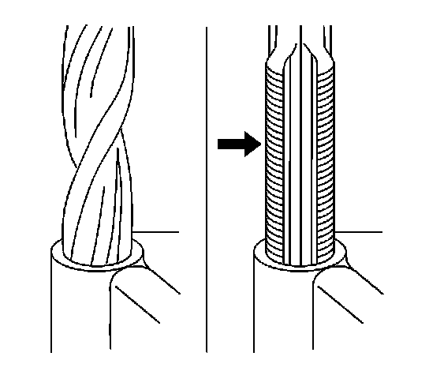
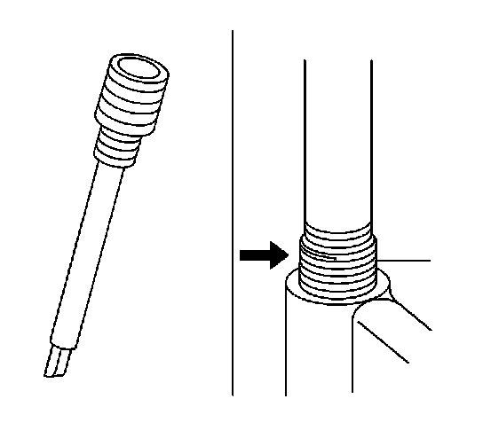

Thread Inserts
Thread Inserts
General purpose thread repair kits. These kits are available commercially.
Repair Procedure
Caution: Refer to Safety Glasses Caution .
Important: Refer to the thread repair kit manufacturer's instructions regarding the size of the drill and tap to use.
Avoid any buildup of chips. Back out the tap every few turns and remove the chips.

1. Determine the size, the pitch, and the depth of the damaged thread. If necessary, adjust the stop collars on the cutting tool and tap to the required depth.
2. Drill out the damaged threads. Clean out any chips.
3. Lubricate the tap with light engine oil. Tap the hole. Clean the threads.

4. Thread the thread insert onto the mandrel of the installer. Engage the tang of the insert onto the end of the mandrel.
Important: The insert should be flush to one turn below the surface.
5. Lubricate the insert with light engine oil, except when installing in aluminum and install the insert.
6. If the tang of the insert does not break off when backing out the installer, break the tang off with a drift.